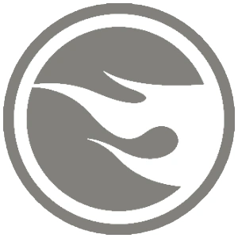
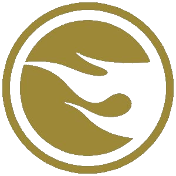

Pojęcia podstawowe
-
Treasure Hunt (TH)

- Jest to rzadsza wersja podstawowego modelu, wydawana w znacznie mniejszych ilościach. Zazwyczaj wyróżnia się naklejonym szarym logo płomienia ukrytym gdzieś na karoserii oraz podobnym znaczkiem nadrukowanym na kartoniku za modelem.
-
Super Treasure Hunt (STH)

- To prawdziwy Święty Graal dla każdego kolekcjonera. Modele te są ekstremalnie rzadkie i posiadają gumowe opony z prawdziwym bieżnikiem oraz lśniący lakier typu Spectraflame. Na aucie znajdziesz litery "TH", a na kartoniku pod modelem znajduje się złoty płomień.
Zasady owocnych poszukiwań
- Wczesne wstawanie: Bądź w sklepie zaraz po otwarciu, gdy obsługa wystawia na półki świeże dostawy prosto z palet.
- Dokładna weryfikacja: Szukaj symbolu płomienia ukrytego na karcie tuż za samym modelem. Czasami trzeba się dobrze przyjrzeć.
- Zwracaj uwagę na opony: Gumowe koła, czyli tak zwane Real Riders, to najszybszy i najprostszy sposób na wypatrzenie wyjątkowej wersji STH w morzu zwykłych aut.
Tabela porównawcza
| Główna cecha | Rodzaj wariantu modelu | |
|---|---|---|
| Zwykły Mainline | Super Treasure Hunt (STH) | |
| Lakier | Zwykły błysk, mat lub metalik | Błyszczący lakier Spectraflame |
| Koła i opony | Standardowe, twardy plastik | Gumowe opony (Real Riders) z felgami |
| Oznaczenie na aucie | Często brak lub zwykłe logo HW | Złote logo w postaci liter "TH" |
| Znaczek na karcie | Brak znacznika | Złoty płomień w kółku |